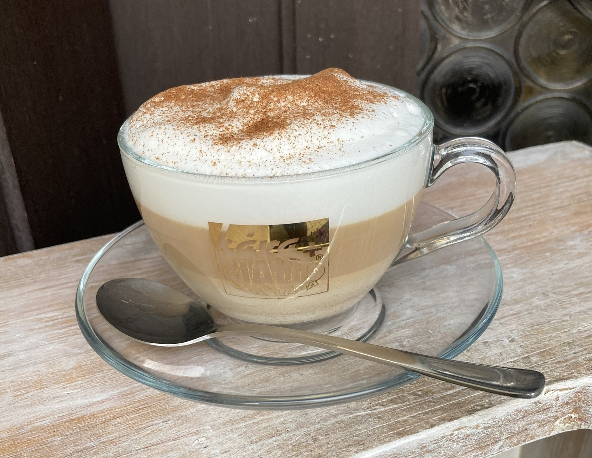
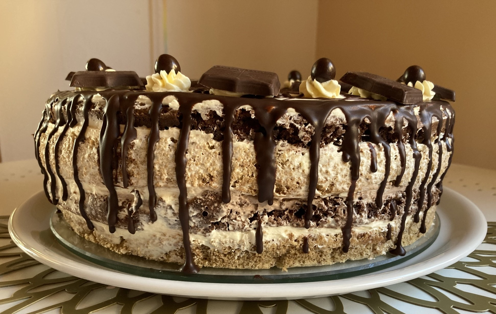
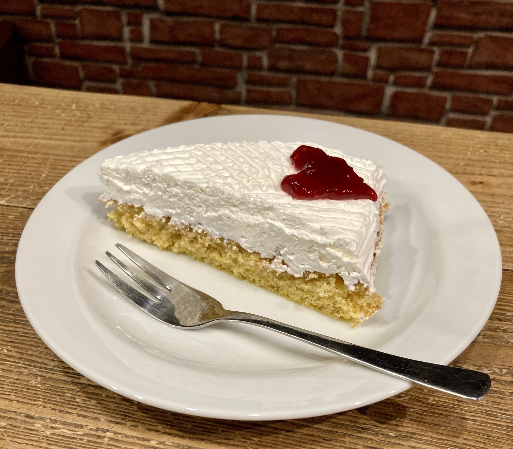
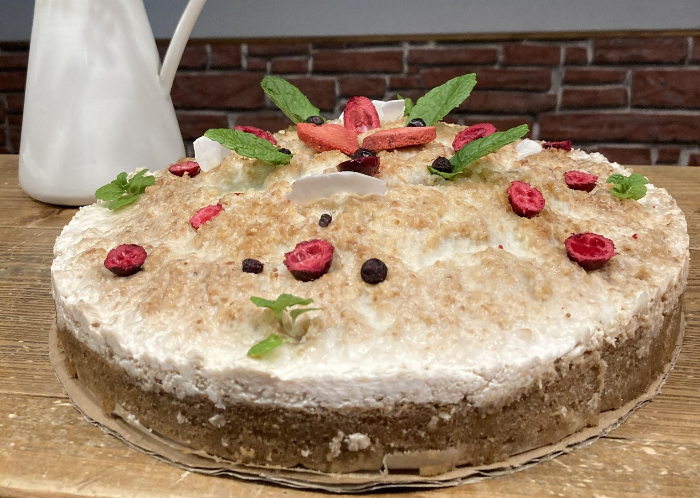
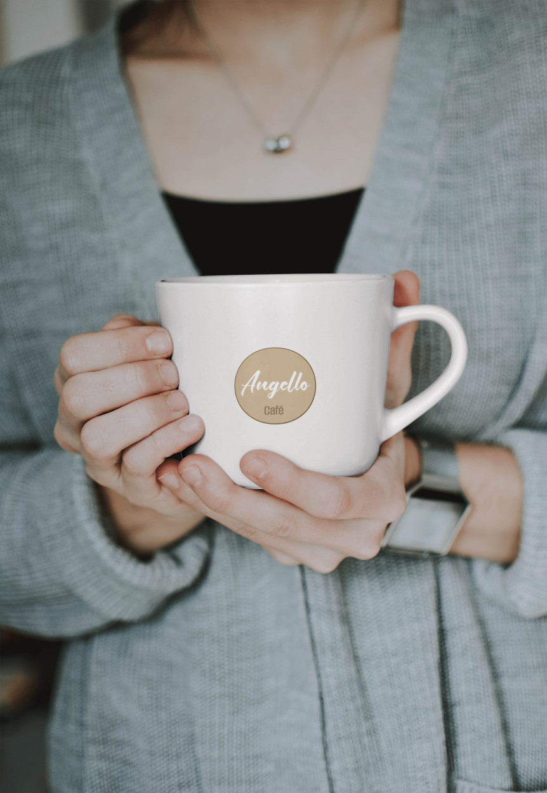

... prémiová káva z lokálních pražíren

Připravujeme pro Vás dezerty z domácích surovin ...



Naše filosofie
Naše rodinná kavárna vznikla z lásky k dobré kávě a touhy vytvořit místo, kde se každý cítí jako doma. Nabízíme prémiový sortiment, který pečlivě vybíráme od malých pražíren a lokálních dodavatelů.
Každý šálek kávy je u nás malým rituálem, za kterým stojí kvalita a udržitelnost.
S osobním přístupem a úsměvem vás přivítá obsluha, která dbá na to, aby vaše návštěva byla nezapomenutelným zážitkem. Vítejte v kavárně, kde každá káva vypráví svůj příběh.
